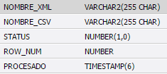
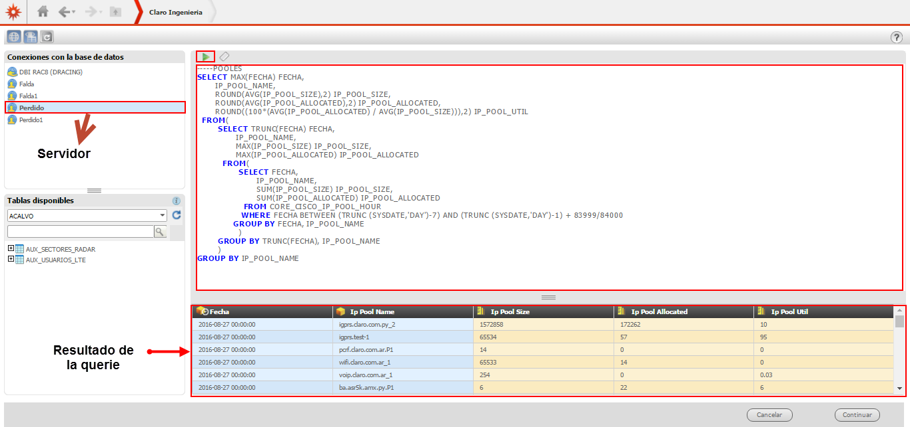
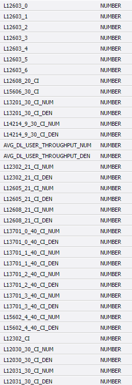
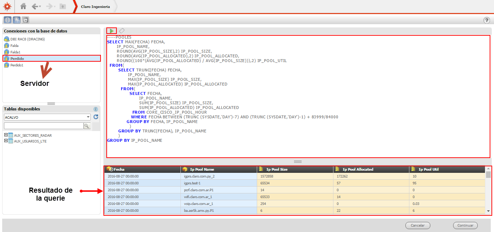
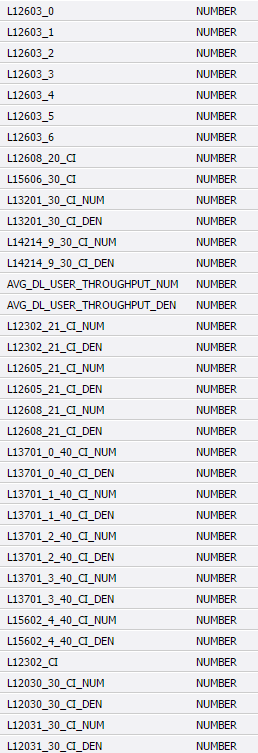
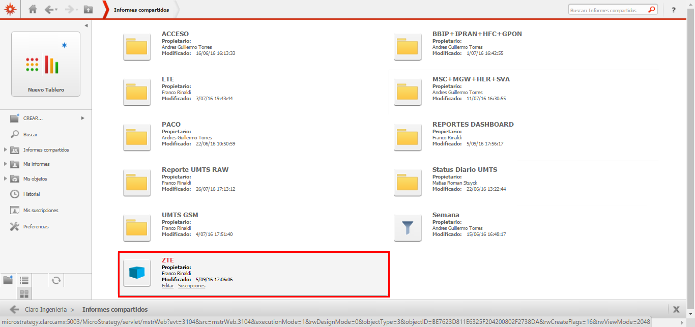
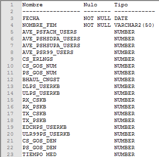
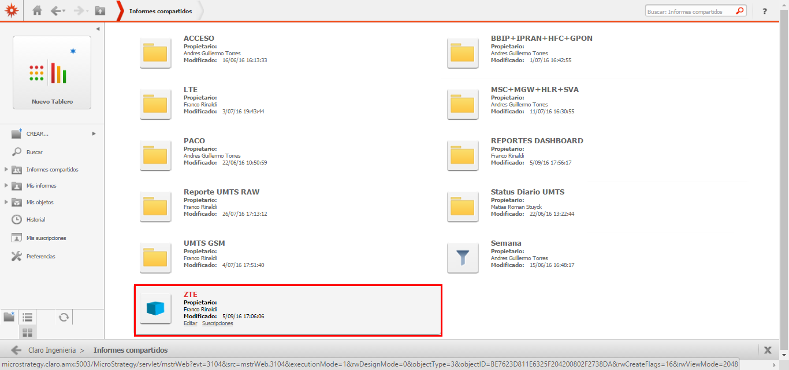
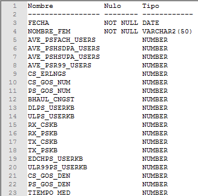

OCUDR¶
1. OBJETIVO¶
El presente documento buscar explicar y detallar el proceso que genera OCUDR- Calculo de sumarizaciones
2. ALCANCE¶
- Áreas involucradas: Performance de Red
3. DEFINICIONES¶
- Guerrero: Servidor LINUX en el cual el proveedor deposita los archivos csv.
- Ocudr: Oracle Communications user data repository (Repositorio de datos de usuarios)
4. DESCRIPCIÓN GENERAL¶
OCUDR
¿Que es PCRF?
PCRF (Policy and Charging Rules Funcion)
Es un nodo dentro del EPC/Packet Core diseñado para establecer políticas en tiempo real, aplicadas a un usuario en particular, un grupo de usuarios o toda la red. Las acciones del PCRF se basan las reglas previamente programadas llamadas políticas ,teniendo como referencia un perfil de usuario alojado en una base de datos llamada UDR (User Data Repository). Todas las reglas definidas (cuotas, tiempos fechas, QoS) se alojan y contabilizan en la base de datos interna y temporal del PCRF, y dependiendo de la política, se escriben de forma permanente en el UDR. El PCRF es un elemento de control (control plane) que define las acciones al P-GW (user plane) para que las realize.
La plataforma PCRF de Oracle Communications, se llama OCPM. Actualmente utilizamos la versión 11.5.1, compatible con los estándares de 3GPP release 11.
La arquitectura básica de la plataforma consta de un manager en donde se programan las políticas, llamado Configuration and Management Platform (CMP) y un nodo que es quien se conecta vía Diameter con el P-GW (por la interfaz Gx) y el Core IMS (por la interfaz Rx). Este nodo se llama Multimedia Policy Engine: MPE. Como parte de la solución integral se cuenta con la base de datos UDR, llamada OCUDR donde también se utiliza una interfaz Diameter llamada Sh contra el MPE para operaciones de lectura y escritura.
5. DESCRIPCIÓN DETALLADA¶
5.1. Datos Origen¶
Server Origen y Path: Desde el servidor guerrero.claro.amx
Cantidad de archivos origen: 6 archivos
o Provisioning_Performance_AAAAMMDD-hhmmss.csv
o Sh_Performance_AAAAMMDD-hhmmss.csv
o Subscription_Management_AAAAMMDD-hhmmss.csv
o UDRFE_Performance_AAAAMMDD-hhmmss.csv
o UDRBE_Performance_AAAAMMDD-hhmmss.csv
o OAM.SYSTEM_AAAAMMDD-hhmmss.csv
Tipo de Archivo: CSV
5.2. Datos Destino¶
Server Destino: Perdido
Conversión de Archivos: Si
Tabla Files: No
Tabla Auxiliar: No
Frecuencia de corrida del proceso: 20 minutos (Nivel Hour), cada 24hs (Nivel Day), 1 vez a la semana
Regionales: No
RAW Si/No: Si
Hour Si/No: Si
Day Si/No: Si
BH Si/No: Si
ISABH Si/No: Si
Países: No
Directorio Destino (File System):
o /calidad/sva/tekelec/ocudr/daily/sva_tekelec_ocudr_ins_day.sh o /calidad/sva/tekelec/ocudr/summary/sva_tekelec_ocudr_isabhw. o /calidad/sva/tekelec/ocudr/hourly/sva_ocudr_hour.sh
5.3. Shell Copiar Archivos Origen a Destino y limpieza de los mismos¶
Los scripts son los siguientes:
5.4. Listado de tablas utilizadas¶
Las tablas utilizadas son:
 





 



Las queries son las siguientes:
TABLAS A NIVEL DAY/ BH:
TABLAS A NIVEL HOUR:
- ocudr_udrfe_performance_hour
- ocudr_comagent_hour
- ocudr_oam_hour
- ocudr_provisioning_perf_hou2
- ocudr_provisioning_perf_hour
- ocudr_sh_performance_hour
- ocudr_udrbe_performance_hou2
- ocudr_udrbe_performance_hour
TABLAS A NIVEL ISABHWEEK:
6. REPROCESO¶


8. CONTROL DE CAMBIOS¶
| Fecha | Responsable | Ticket Jira | Detalle | Repositorio |
|---|---|---|---|---|